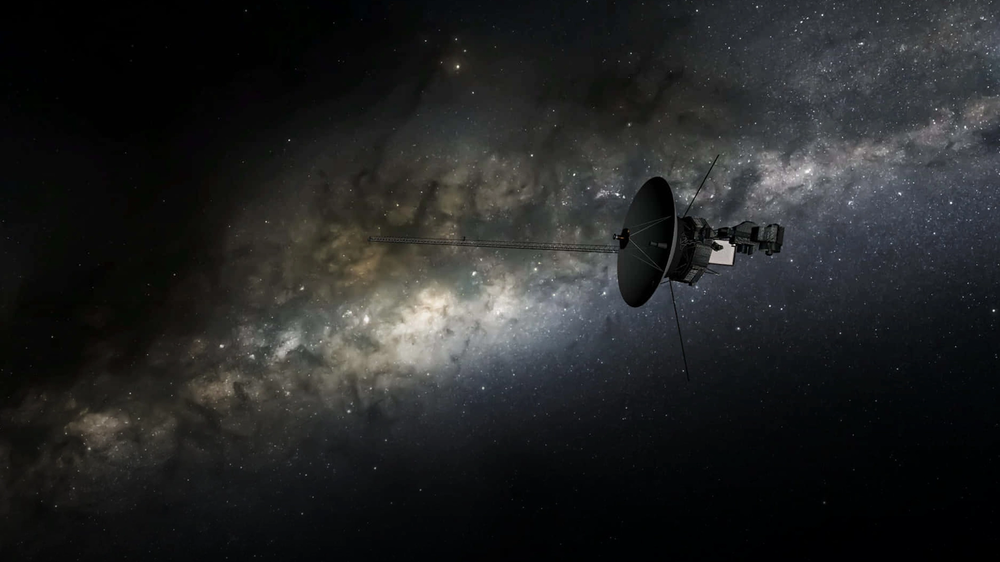

5 min read
Launched on September 5, 1977, Voyager 1 embarked on a monumental journey destined to take humanity's presence beyond the confines of our solar system. Initially tasked with exploring the outer planets, this intrepid spacecraft has since shattered the boundaries of exploration by becoming the first human-made object to enter interstellar space. As it travels through this uncharted territory
Voyager 1 continues to transmit invaluable data back to Earth, offering insights into the cosmos that were once beyond our reach. This article explores the remarkable journey of Voyager 1, its historic encounters with Jupiter and Saturn, and its ongoing mission in the vast expanse of interstellar space.
Voyager 1's mission was part of the larger Voyager program, which aimed to take advantage of a rare planetary alignment to explore the outer planets. Equipped with a suite of scientific instruments, Voyager 1 was tasked with conducting close-up studies of Jupiter, Saturn, and their moons. Following its twin, Voyager 2, which was launched 16 days earlier, Voyager 1's trajectory was designed to provide a detailed examination of Saturn's rings and moons, with a particular focus on Titan, Saturn's largest moon.
As Voyager 1 approached Jupiter in March 1979, it began sending back images that would forever change our understanding of the giant planet and its moons. The spacecraft revealed active volcanism on Io, Jupiter's innermost Galilean moon, marking the first time active volcanoes had been observed on another body in the Solar System. The detailed images of Jupiter's atmosphere also provided unprecedented insights into the planet's complex weather systems, including its iconic Great Red Spot. Continuing its journey, Voyager 1 made its closest approach to Saturn in November 1980. The spacecraft's observations of Saturn's rings offered detailed views of their structure, revealing the intricacies of these celestial bands made of ice and rock. Voyager 1's flyby of Titan gathered crucial data about its thick atmosphere, which is rich in nitrogen and hydrocarbons, hinting at the complex chemistry that could be taking place on its surface.
After its encounters with Jupiter and Saturn, Voyager 1's mission was extended to study the outer reaches of the solar system and beyond. On August 25, 2012, NASA announced that Voyager 1 had entered interstellar space, marking a historic milestone in human exploration. The spacecraft had crossed the heliopause, the boundary where the solar wind's influence ends and the interstellar medium begins. This achievement was confirmed by measurements indicating a sudden increase in cosmic rays from outside the solar system and a sharp decrease in solar particles. As of now, Voyager 1 continues its journey into the unknown, traveling at a speed of about 17 kilometers per second (38,000 miles per hour) relative to the Sun. Despite being billions of kilometers from Earth, it still communicates with NASA's Deep Space Network, sending back data that provides insights into the nature of interstellar space. The spacecraft's power is expected to last until about 2025, after which it will continue its silent voyage among the stars, carrying with it a golden record containing sounds and images selected to portray the diversity of life and culture on Earth. Voyager 1's journey represents one of humanity's most significant achievements in space exploration. As the first human-made object to venture into interstellar space, it has expanded our understanding of the solar system and beyond. The data and images sent back by Voyager 1 have not only unveiled the mysteries of Jupiter and Saturn but also provided a glimpse into the vast, unexplored expanse of the cosmos. As Voyager 1 continues its interstellar odyssey, it remains a testament to human curiosity and our unending quest to explore the unknown.